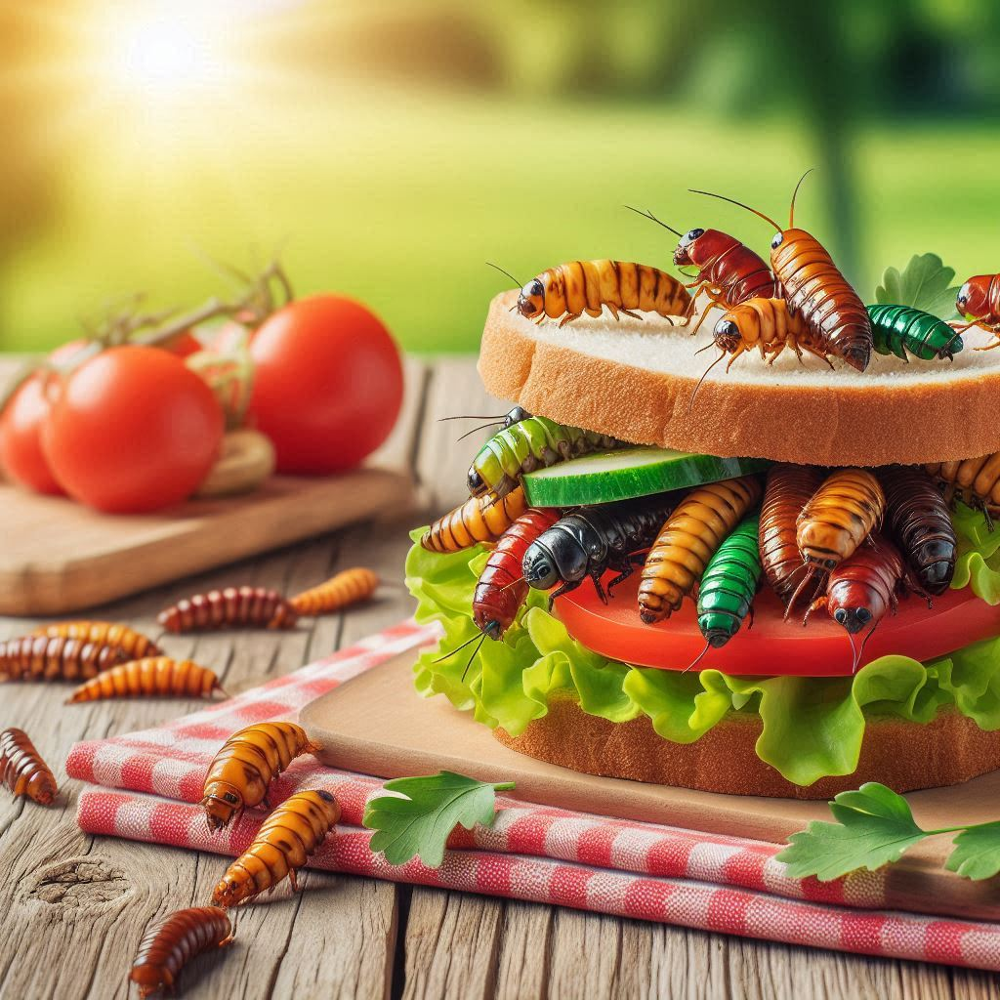
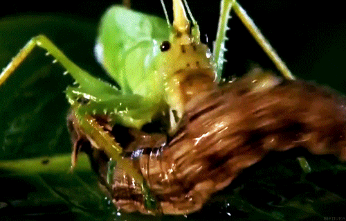

BUG SANDWHICH


A crunchy, protein-packed favorite among trolls, goblins, and forest-dwelling fiends. This sandwich is piled high with sizzling insects, wriggling condiments, and earthy toppings straight from the underbrush. Great for midday munching or late-night lurking. Best served on toasted fungus bread with a side of slime chips.
Ingredients
- 🪳 1 cup roasted beetles – seasoned with sulfur salt
- 🐛 ½ cup live grub worms – lightly marinated in bog vinegar
- 🕷️ 3 giant spider legs – grilled until crispy
- 🍄 2 slices of fungus bread – mold-ripened and slightly spongy
- 🌱 Handful of swamp greens – picked fresh from cursed wetlands
- 🥚 1 pickled carrion egg – for tang and funk
- 🧄 Garlic slime spread – made with fermented troll tears
- 🔥 Optional: Dash of lava pepper flakes – for volcanic heat
- 🧬 Optional: Binding gel – to keep the bugs from escaping mid-bite
GO HOME